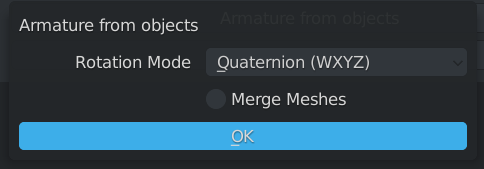
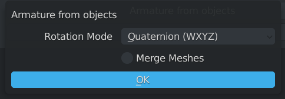
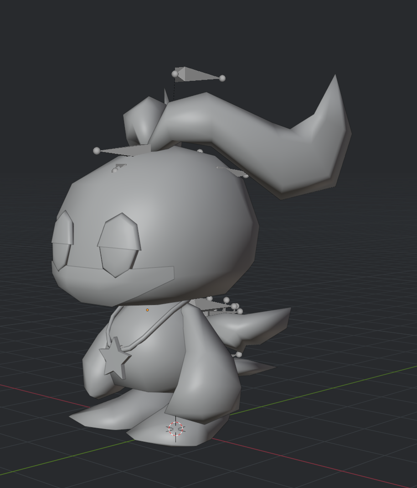
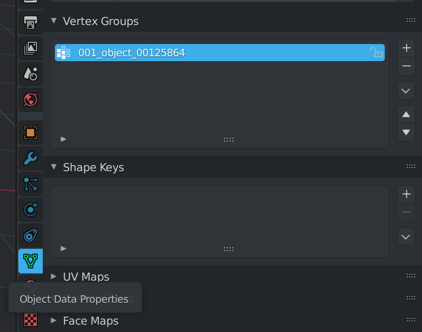
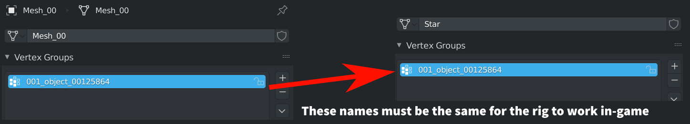
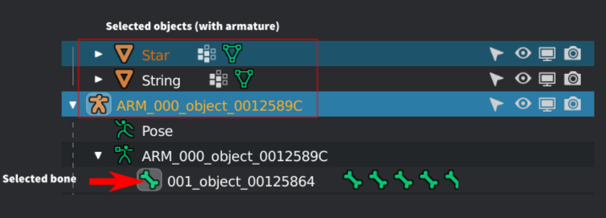
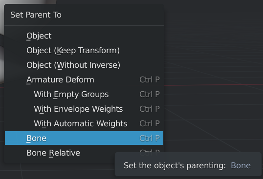
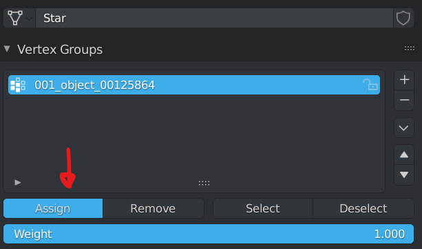
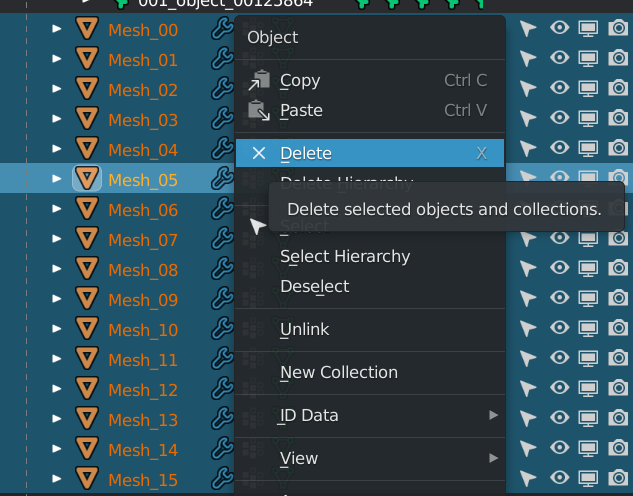

Accessory Modding
If you want to take your hat and accessory modding to the next level, this would be the best way to do it. This will allow you to parent your accessory to the Chao itself, giving you the chance to make clothing, or trinkets for your Chao.
Prerequisites:
- the latest version of the hats code
- Have completed and made at least one hat on your own (with the code from v1.1.1)
- all the previous prerequisites listed in the hat modding section of this guide
- Advanced 3D knowledge (rigging, weight painting)
Preparations:
All the preparations should be set up from the hat section, however to be sure, make sure you have the following:
- An SA Tools project for extracted Chao types
- the latest version of the hats code
- an accessory to put onto the Chao (or a premade asset if you're learning)
Setting up the rig for the accessory:
Import a Chao model from your AL_RootObject directory, keeping in mind what type you want to optimize the accessory for. For this example, I'll use Hero Swim Fly.
Select your Chao's root empty object (the 000_object empty at the top of the hierarchy), and in the tools panel look for "Armature from Objects." Click OK on the context menu that pops up. This will create a duplicate of your Chao, with Blender ready bones that can be rigged. Delete the imported Chao afterwards.
 

From here, create the model that you want to see on your Chao, minding for clipping on the Chao. I made a necklace for example. You can use multiple meshes as an example, but be sure to parent them all when you get to the rigging stage
Select the body part you want to constrain the accessory to. Here for example, I'll select the stomach. In the "Object Data properties, look for the vertex group that was set up from the Armature from Objects tool. We will need its name for the accessory rig.
Copy the vertex group name, and create new vertex groups for your accessories with that name.
Select the bone with the same prefix - If you have a 001 for stomach, look through the armature for 001. Select that bone, then select your object to parent, and then select the armature. Do them one at a time to make sure that they parent correctly. The rounded square indicates the selected bone in the View Layer, and should give you a contextual hint to what your object will be parented to. Make note of this!
Press ctrl+P to open the parenting menu, or go to Object -> Parent -> Bone in the objects menu. The object should now be parented to the bone. Repeat the above steps for the other objects you want to parent to the Chao.
to test if the parenting was successful, select the armature, and press ctrl+tab to go into Pose Mode, and rotate or move your Chao model around to see if the objects you parented to bone have parented correctly. cancel the operation by pressing the Escape key, and exit pose mode for the next step.
if your parented object is moving according to the part you parented, but deforming, then go to the object having issues, go to edit mode, and select all. go back into the Object Data tab in properties, and click the "Assign" button. This will assign a weight paint of 1.00 to the whole object, therefore preventing any deformation from happening when transformed. this can be checked in Weight Paint mode, where the object will appear as red if the value is 1.00, or blue if the value is 0.00
Now that the accessory has been set up for rigging, delete the meshes that were created by the "Armature from Objects" operation. They aren't needed for the export.
Follow the steps for texturing, and once all ready, export the model
Code:
We will be using the same code from the hat guide. Make sure to have updated your code to the latest version if you haven't! this code will not work if you have not updated!
Open your Visual Studio Project and go to your main.cpp file. Look for the example EasyRegisterAccessory and modify that, making sure to follow the function prototype. Here, you can add an EAccessoryType of Generic1 or Generic2 so that your accessory will be attached to the right location. Build, and complete the process as per Hat modding guide. This code is subject to change, so be sure to check and update the code as appropriate, as new functionality will be added soon!
//ChaoTexlistLoad - "Filename" - Do NOT conflict with other hat or fruit mods. - make sure your UIDs are unique!
RegisterChaoTexlistLoad("ExampleAccessories", &texlist_HATS);
//EasyRegisterAccessory - "Filename", buy, sell, "Name", "Description", EAccessoryType (see enum above) - Adding a documentation example
EasyRegisterAccessory("ExampleAccessory.sa2mdl",100,100,"Example name","Example description",Generic1);